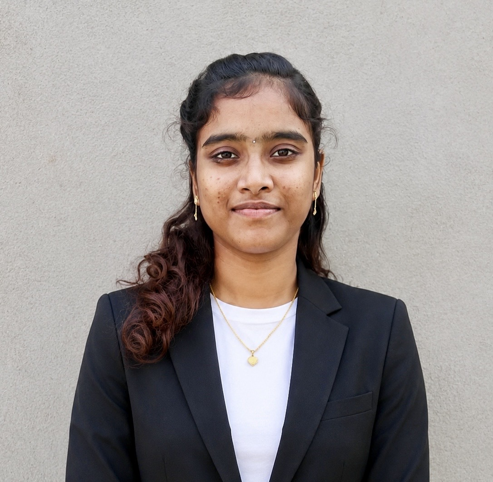

Phone: 7993882779
Email: pavaniganti5@gmail.com
GitHub: https://github.com/Pavani23ios
Third-year B.Tech student specializing in Artificial Intelligence and Machine Learning with a strong interest in Front-End Web Development. Proficient in HTML, CSS, Bootstrap, and basic JavaScript, with a passion for building responsive and user-friendly websites. Eager to learn, contribute, and gain practical experience through a web development internship.
| Qualification | Institution | CGPA/Percentage |
|---|---|---|
| B.Tech (CSE – AI & ML) | SASI Institute of Technology & Engineering | 9.22(till 2-1 semester) |
| Intermediate (MPC) | Sasi College Tanuku | 96% |
| SSC | Sri Chaitanya Techno School | 94% |
Created a responsive Coffee Shop website using HTML and CSS with a simple and modern design. Built sections like Home, Menu, About, and Contact using semantic HTML and a responsive layout. Focused on creating a clean, easy-to-use interface that provides a smooth user experience.